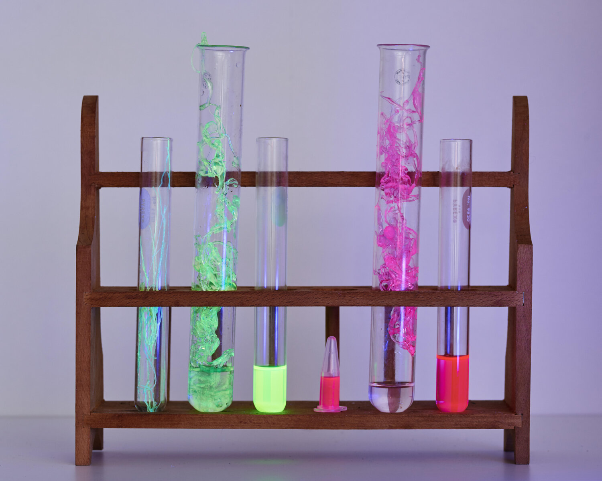

There are problems with fast fashion. We made an overview of the issues including poor working conditions, high rates of pollution, and unsustainable rates of resource consumption. Billions of garments are made every single year, and they are not made to last. The mountains of textile waste will keep growing.
For possible solutions, we looked to other actors in this area. Businesses who said “the fashion industry is broken and we have ideas about how to fix it!” There are businesses that provide decent conditions and wages to their employees. There are businesses that curtail their use of natural resources and of polluting chemicals in various ways.
Most intriguing to us were the businesses pioneering new materials that would be safer to work with, use less resources and were biodegradable at their end of life. We got really excited about new biodegradable materials! We envisioned a line of stylish and affordable clothing that could decompose on a fast fashion timescale and keep future textiles out of the waste stream.
But, we were looking at the production process of new clothes and neglecting the end result of the old clothes. That being, release of various chemicals into areas near landfills as synthetic materials slowly fall apart and infiltrate the environment.
There are billions of plastic clothing items falling apart and shedding microplastics all over the world. It’s in the oceans, in the air, and even in our food. We thought about getting into the production game, to make more non-polyester clothing, make more and new natural materials that could biodegrade, but the plastic problem continued to weigh on us.
It turns out that nature is much more clever than we had given credit for. There are multiple species which have developed the ability to decompose plastic back into organic matter. Several living organisms, including bacteria, fungi, and even worms, have been identified with the ability to digest plastic. They can’t just be seeded into landfills at random though, some may be invasive if moved from their original habitats. Some are dangerous to other plants and animals, or even humans.
We propose a service that would intercept various plastics for which biodegrading enzymes have been identified and remove them from the waste stream. We are hopeful that the metabolites will prove useful. Our favorite candidate, Pestalotiopsis Microspora, is a taxol-producing organism and Taxol is used to treat cancer. An overview of the literature has shown that it is known to produce other useful metabolites as well.
More data is needed before this can operate on the scale we dreamt of. On consulting with experts we realized that we’ve only seen reports of P. Microspora eating undyed plastics, we have found no record of the organism eating dyed material. This could still be useful, the plastic based undyed sherpa lining on jackets is a major source of microplastics and down alternative puffer coats are stuffed with it.
We believe that the data at present supports using plastic-eating organisms, in an enclosed and controlled environment, to break down undyed plastics of known composition. Companies such as SuperCircle are already tracking the composition of clothing to assist with end-of-life strategies. Companies such as ForDays and H&M are collecting clothing which has passed its useful life so that it can be responsibly disposed of and preferably recycled instead of sending it to landfill. Biodegrading existing plastic may sound Utopic, but the necessary allies already exist.